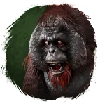
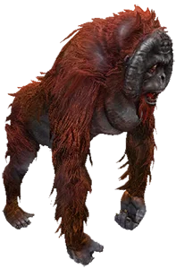
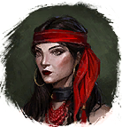

Открыть в интерактивной вики →

| Уровень | 35 |
|---|---|
| Прокачка | есть |
| Ранг в стае | 3 |
| Здоровье | 1100 |
| Мана | 800 |
| Выносливость | 1200 |
| Статистика | Уровень: 35, ранг: 3, здоровье: 1100, мана: 800, выносливость: 1200 |
Цена
8  Империал
Империал
ИмпериалГде взять
Покупается у Виолы

ВиолаНавыки


Скины
Доп. информация
Требуемый уровень: 35
Цена: 25 империалов
Покупка: у Виолы
Может получать опыт — ДА
Описание
 | Необычный зверь прямо с тропических островов. Необычно дрессированный. Необычно смелый. И красивый по-своему. Атакует издалека и ментально. Использует: Ярость, Твоя старуха, Боевой клич, Бросок камнем. | |